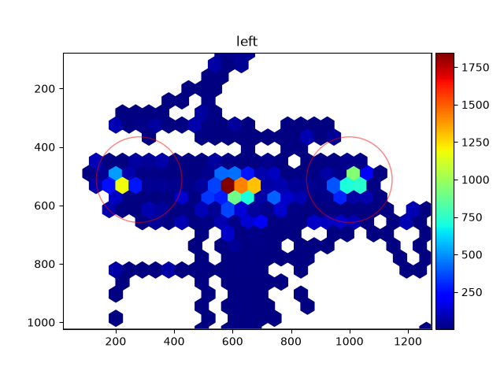

Regions of interest#
A region of interest (ROI) is a part of the screen, e.g., where a stimulus was shown. With ROIs, the gaze position becomes a question that can be answered per sample or per trial: did the participant look at the stimulus, when, and for how long? This page explains how ROIs are defined and how they are used with continuous data and with segments around events. The tutorial Gaze in regions of interest around events shows a complete analysis.
The examples use the short example dataset, which has the gaze of both eyes (in screen pixels) and an experimental setup:
import numpy as np
import pandas as pd
import pypillometry as pp
from pypillometry import u
d = pp.get_example_data("rlmw_002_short")
Defining ROIs#
CircularROI (center and radius) and RectangularROI (two
corners) are stored in pixels, like the gaze: x from left to right, y from
top to bottom. from_degrees() and from_mm() create them from
degrees of visual angle or mm relative to the screen center (y up); this
needs the geometry of the setup (see Gaze data and the experimental setup):
setup = d.experimental_setup
left = pp.CircularROI.from_degrees(("-8 deg", "0 deg"), "3 deg", setup=setup,
name="leftopt")
right = pp.CircularROI.from_degrees(("8 deg", "0 deg"), "3 deg", setup=setup,
name="rightopt")
target = pp.RectangularROI((540, 412), (740, 612), name="target") # pixels
The name is used for the channels and table columns of the analyses below
(e.g., left_leftopt); it is needed there, or can be given as
name=.
Circular Region of Interest defined by center point and radius. |
|
Rectangular Region of Interest defined by two corners. |
ROIs in continuous data#
ROI.contains() tests an array of (x, y) positions;
the gaze plots draw ROIs with rois=:
gaze = np.column_stack([d["left_x"], d["left_y"]])
in_left = left.contains(gaze) # one bool per sample
d.plot.plot_heatmap(eyes="left", rois=[left, right])
The boolean array can become Intervals (the visits to the ROI,
with Intervals.from_mask()) or a channel of the data (see
Experimental setup and regions of interest).
The heatmap of the left eye with the two ROIs (the options of the task, 8° to the left and right of the center):
d = pp.get_example_data("rlmw_002_short")
setup = d.experimental_setup
left = pp.CircularROI.from_degrees(("-8 deg", "0 deg"), "3 deg", setup=setup, name="leftopt")
right = pp.CircularROI.from_degrees(("8 deg", "0 deg"), "3 deg", setup=setup, name="rightopt")
d.plot.plot_heatmap(eyes="left", rois=[left, right])

ROIs around events#
For event-related questions, cut the gaze into segments around the events
with get_segments() (see Events, intervals and segments). The
segments keep x and y of each eye (and the pupil) with the same epochs, and
the namespace seg.gaze analyses them with ROIs:
Add channels that say where the gaze is in a region of interest. |
|
Plot the share of trials in which the gaze is in a region of interest over time (fixation curve), with an error ribbon. |
|
Time the gaze spends in a region of interest in each trial (ms). |
|
Time of the first usable sample in a region of interest in each trial (ms). |
epochs = d.get_epochs("S_", (-500, 3000) * u.ms)
seg = d.get_segments(epochs) # pupil, x and y of both eyes
Where the gaze is: ROI channels#
roi_hits() adds a channel for each
eye, <eye>_<ROI name>: 1 where the gaze is in the ROI, 0 where it is
outside, masked where x or y are masked (e.g., during blinks or outside the
screen, see Missing data):
seg.gaze.roi_hits(left)
seg.gaze.roi_hits(right)
seg.channels # [..., 'left_leftopt', 'right_leftopt', 'left_rightopt', 'right_rightopt']
ROI channels are channels like the others: they are selected, saved and
averaged with the segments. Their mean over the trials at a time point is
the share of the trials in which the gaze is in the ROI (among the trials
whose gaze is usable at that time point). Over time, this is a fixation
curve; plot_roi() plots it with
its standard error, one line per eye:
seg.gaze.plot_roi("leftopt") # from the channels added above
seg.gaze.plot_roi(target) # or directly from an ROI (no channel is added)
New curves can be computed from ROI channels and added as channels, e.g.,
the gaze on the option that was chosen in each trial (with a metadata
column side of the epochs). Use np.ma.where, which keeps the masks
(np.where drops them):
chose_left = seg.epochs.meta["side"] == 1
seg["left_chosen"] = np.ma.where(chose_left, seg["left_leftopt"], seg["left_rightopt"])
seg.plot("left_chosen")
Measures per trial#
dwell_time() gives the time (ms)
the gaze is in the ROI in each trial, counting only usable samples;
first_entry() the time (ms,
relative to the event) of the first usable sample in the ROI, from the
event onset on by default. Trials without usable samples, or that never
enter the ROI, get NaN. Both take an ROI or the name of ROI channels, a
time window and eyes, and return a table with the onsets, labels
and metadata of the epochs and one column per eye (<eye>_<ROI
name>):
dwell = pd.DataFrame(seg.gaze.dwell_time(left, window=(0, 1000)))
first = pd.DataFrame(seg.gaze.first_entry("rightopt", eyes="left"))
These tables can be used directly for statistical models of the trials,
like the results of stat_per_event().
Selecting trials for gaze and pupil#
All channels of the segments share their trials, so a selection made with the gaze also applies to the pupil, e.g., the pupil response in the trials in which the participant looked at the left option within the first second:
looked = seg.gaze.dwell_time(left, eyes="left", window=(0, 1000))["left_leftopt"] > 0
erpd = seg.keep(looked).pupil.baseline_correct((-200, 0))
erpd.pupil.plot()
filter() selects by the labels and metadata of the
epochs (seg.filter(side=1)).
Several participants#
group_segments() averages the segments of each participant (see
Events, intervals and segments), so the fixation curve of the group is the mean
of the participants’ curves (with their standard error). Choose the
channels to combine with channels=:
group = pp.group_segments({"P01": seg1, "P02": seg2},
channels=["left_leftopt", "left_rightopt"])
group.gaze.plot_roi("leftopt")
ROI channels must be added before averaging: averaged x and y say nothing
about where the gaze was in the trials, so
roi_hits() and
first_entry() raise an error for
averages. dwell_time() of an
average is the mean dwell time of its trials.
What is not included#
ROIs that move or change during a trial: the ROI is the same at all time points of the segments. Several ROIs (one per phase or per stimulus position) and the trial metadata can be combined as shown above for the chosen option.
Fixation detection: the ROI channels use the gaze samples, not fixations.
Heatmaps per condition of the segments; use
EyeData.plot.plot_heatmapon the continuous data (withplot_range) for now.